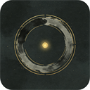
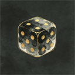
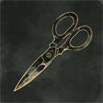
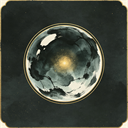
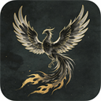

0 魔石
0 魔石
暗黑大陆 · 世界地图
点击地图上的标记进入对应区域 · 点击「不归城」进入主城
不归城
旅者的据点 · 点击城寨中的建筑进入
我的宠物
空闲
本轮 0 场
累计 0 场 · 掉落装备 0 件
宠物军团
资料 · 进化 · 合成 · 涅槃 · 觉醒
宠物列表点击切换出战 · 悬停看属性
当前出战
我的宠物
Lv.1
转生 0 次
0/15
主动技能：终形态 Lv.60 解锁
生命100
攻击20
防御10
速度8
成长5.0
下一步下一形态 · 装备进度
次级属性暴击 / 命中 / 闪避 / 吸血 / 装备加成
暴击10%
暴击伤害150%
命中90%
闪避5%
吸血0%
装备加成无
魂兽名录点选主素材
合成 · 融魂
未选择主素材
魂兽名录点选主宠
涅槃 · 业火
未选择主宠
魂兽名录点选主宠
进化 · 蜕变
未选择主宠
魂兽名录点选要觉醒的宠
觉醒 · 破魂
← 先在左侧选一只魂兽
市集

交易信息材料 / 税收 / 交易记录▸材料交易货币

重铸石 0
️ 剥离石 0
神圣石 0 ➕ 增缀石 0
涅磐兽 0税收规则卖家承担
每满 8 个材料收 1 个税（不满不收）
买家按标价支付，卖家实收 = 标价 − 税
买家按标价支付，卖家实收 = 标价 − 税
交易记录自动记录每笔成交
累计卖出 0 笔累计买入 0 笔
卖出记录
买入记录
百科
规则与数值速查
成长榜
本周全服宠物成长值排行
加载中…
好友
加好友 · 私聊
加载中…